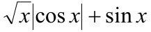

Документ складається з декількох простих HTML-елементів, як, наприклад, div та section. Крім цього, мені вдалося змінити зовнішній вигляд сайту за допомогою CSS-стилів. Сторінку було зроблено так, щоб він виглядав як блог одного користувача

Документ складається з декількох простих HTML-елементів, як, наприклад, div та section. Крім цього, мені вдалося змінити зовнішній вигляд сайту за допомогою CSS-стилів. Сторінку було зроблено так, щоб він виглядав як блог одного користувача
Сторінка, що змінює свій фон на випадковий. Використовується Javascript. Реалізовано за допомогою циклу while
Проста гра як приклад застосування if, else та switch
Приклад використання об'єкту браузера date
Табулювання відповідної функції за варіантом 
Розділення стрічки довільного тексту